Step 0 - 4diac IDE - Overview
This page is part of a guide that gives a walk-through over the major 4diac IDE features.
An overview is presented in this step 0 - about elements, perspectives and preferences of 4diac IDE that you need to know about to use it smoothly.
Starting up 4diac IDE
Open 4diac IDE to start the tutorial. You will be prompted to select or create your workspace. For this tutorial, we name our workspace "Tutorial". A workspace is a folder on your computer that stores one or more 4diac IDE projects.
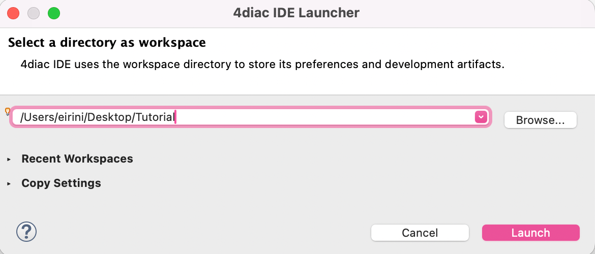
After you created a workspace, 4diac IDE presents its welcome screen. From here you can:
-
Create New 4diac IDE Project – start a new IEC 61499 project with an Automation System.
-
Import Existing Projects – import 4diac IDE projects from the file system or an archive.
-
Clone Project from GIT Repository – clone an existing 4diac IDE project from a Git repository.
-
Create New 4diac IDE Example Project – start from a ready-made example project.
-
Continue to 4diac IDE – close the welcome page and go directly to your projects.
The right column provides quick access to an Overview, What’s New, and the Tutorials.
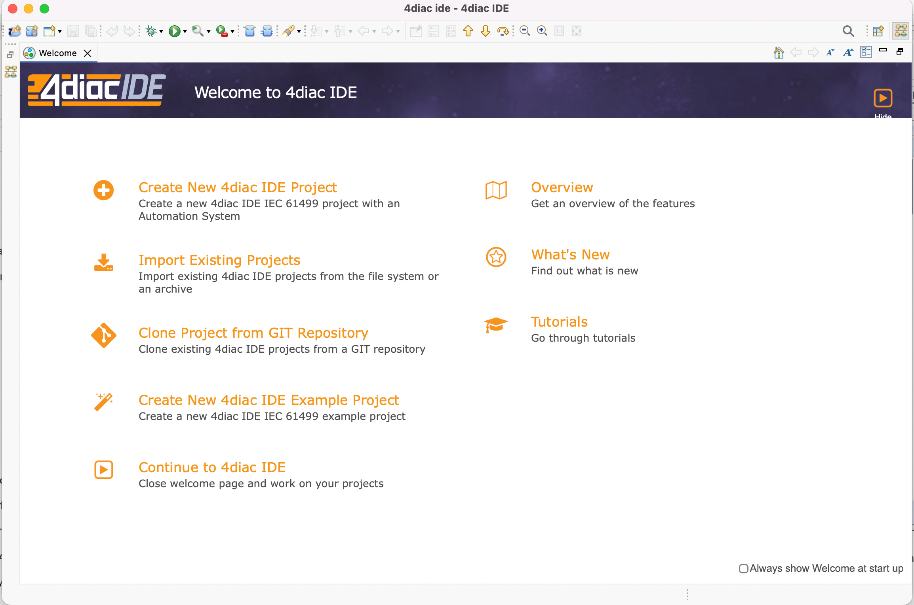
At first it’s best to uncheck Always show Welcome at start up in the bottom-right corner so that 4diac IDE opens directly to the workbench on subsequent launches. You can open the welcome screen again at any time via .
4diac IDE Elements
Since 4diac IDE is compliant to the IEC 61499 standard, 4diac IDE provides the standard’s elements for work (you can check here to revise):
-
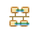
System: It contains the System Configuration and its corresponding Applications. -
Application: It contains the desired application in terms of a FB network.
-
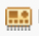
Device: It represents a hardware device such as a Programmable Logic Controller (PLC) or a microcontroller. -
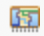
Resource: It is responsible for executing control logic within its own execution context. -
Function Blocks (FBs):
-
 Basic FB (BFB):
The foundational blocks where you write actual control logic. Each BFB has an Execution Control Chart (ECC) — a state machine — that determines when its algorithms run. Algorithms are typically written in Structured Text.
Basic FB (BFB):
The foundational blocks where you write actual control logic. Each BFB has an Execution Control Chart (ECC) — a state machine — that determines when its algorithms run. Algorithms are typically written in Structured Text. -
Simple FB (SFB): A Function Block that contains only one algorithm.
-
 Composite FB (CFB):
Containers that hold a network of other FBs inside them, with no code of their own.
Use them to package repetitive logic and keep your main application tidy.
Composite FB (CFB):
Containers that hold a network of other FBs inside them, with no code of their own.
Use them to package repetitive logic and keep your main application tidy. -
 Service Interface FB (SIFB):
The bridge between your control logic and the outside world — hardware I/O, communication protocols (MQTT, HTTP, OPC UA), or external systems.
If something can’t be done with standard IEC 61499 logic, a SIFB is how you do it.
Service Interface FB (SIFB):
The bridge between your control logic and the outside world — hardware I/O, communication protocols (MQTT, HTTP, OPC UA), or external systems.
If something can’t be done with standard IEC 61499 logic, a SIFB is how you do it.
-
-
Adapter: Bundles multiple event and data connections into a single plug-and-socket pair, replacing a tangle of individual wires with one clean connection. The socket sits on the receiving side and the plug on the sending side, keeping the application diagram clean and making interfaces reusable across block types.
4diac IDE Perspectives
4diac IDE is built on Eclipse and inherits its concept of perspectives — each perspective is a named arrangement of views and editors suited to a particular workflow.
To open a perspective, use from the menu bar:
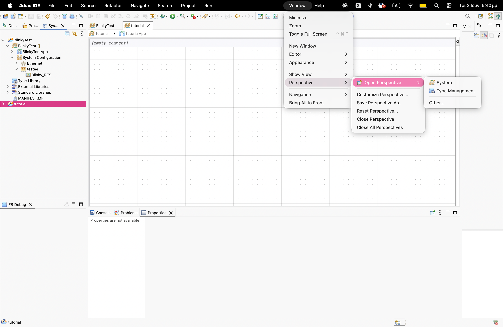
This opens the Open Perspective dialog listing all available perspectives:
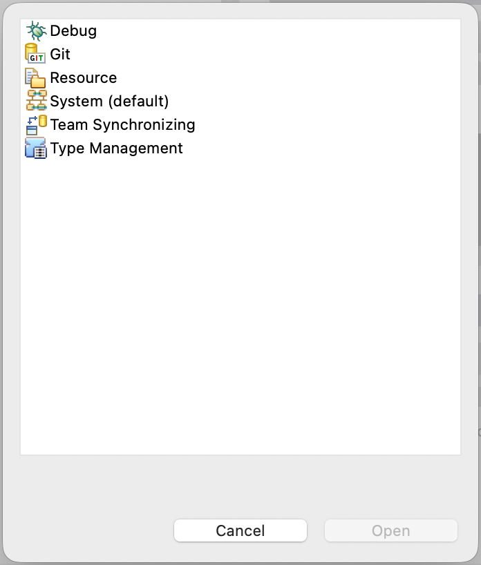
The perspectives relevant to 4diac IDE development are:
-
System (default) – the main workspace for designing IEC 61499 applications.
-
Debug – for monitoring, watching variables, and step-debugging function blocks.
-
Type Management – for browsing and managing the function block type library.
The remaining perspectives (Git, Team Synchronizing) are standard Eclipse perspectives for version control workflows.
System Perspective
The System perspective is the default perspective when 4diac IDE opens. It is divided into the following areas:
-
System Management area (top-left), which contains two tabs:
-
System Explorer – for managing IEC 61499-compliant applications and configuring Devices and Resources.
-
Type Navigator – lists the available function block library for every System as well as the default library.
-
-
Editor area (centre), which hosts the Application editor for modeling control applications, the System editor for modeling the System configuration, and the Device and Resource editor for modeling Resource configurations.
-
Outline (bottom-left), which provides a structural overview of the currently active editor.
-
Properties / Problems (bottom), which allows parameterizing function block instances, Devices, and Resources, and shows any validation errors.
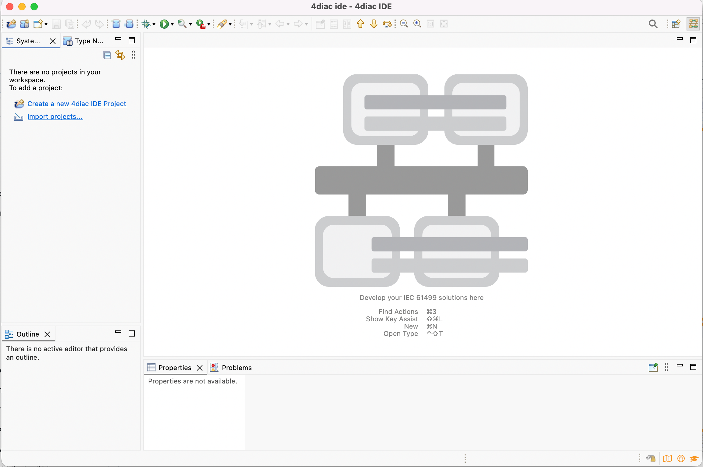
Managing Elements on the Canvas
Instance names of Function Blocks, Resources, or Devices can be changed. You can edit the name directly by double-clicking the instance name on the canvas, using the Properties view at the bottom, or by right-clicking the block and selecting Rename.
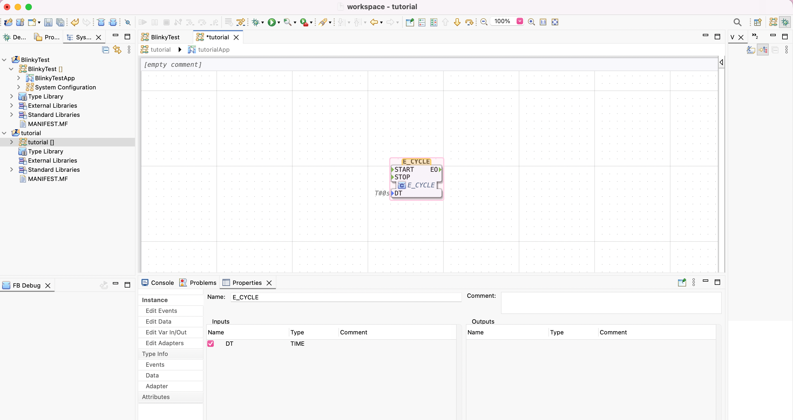
Debug Perspective
The Debug perspective is used for monitoring running applications and debugging function blocks. It is divided into the following areas:
-
System / Project panel (top-left) – systems can be marked for monitoring by right-clicking and choosing .
-
Editor area (centre) – shows the Application and highlights variables currently marked for watching.
-
Variables / Breakpoints / Expressions panel (top-right) – displays the current values of watched variables and manages breakpoints.
-
FB Debug (bottom-left) – shows the debug state of the selected function block.
-
Console / Problems / Properties (bottom-centre) – displays runtime console output and validation information.
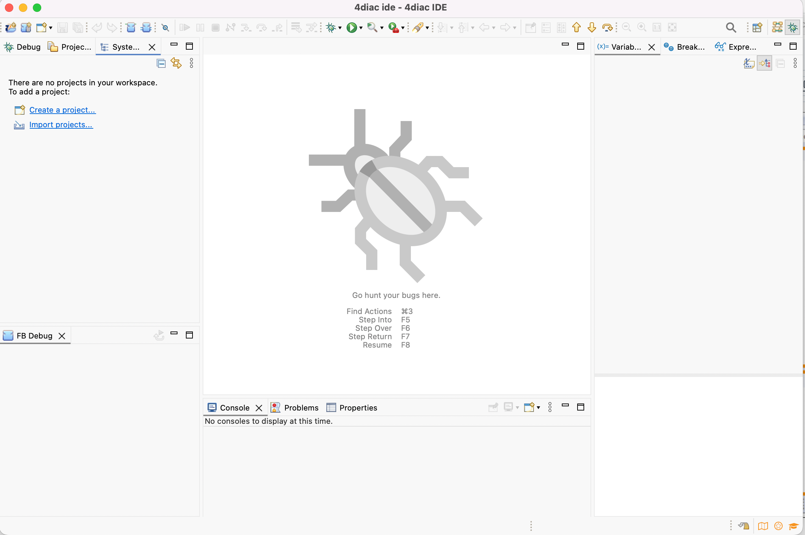
Type Management Perspective
The Type Management perspective is used for browsing and editing function block type definitions. It is divided into the following areas:
-
Type Navigator / Projects (left) – lists all available FB types and projects in the workspace.
-
Editor area (centre) – opens FB type editors for viewing and modifying type definitions.
-
Outline (right) – shows the structural outline of the active type editor.
-
Properties / Problems (bottom) – shows properties and validation messages for the selected type.
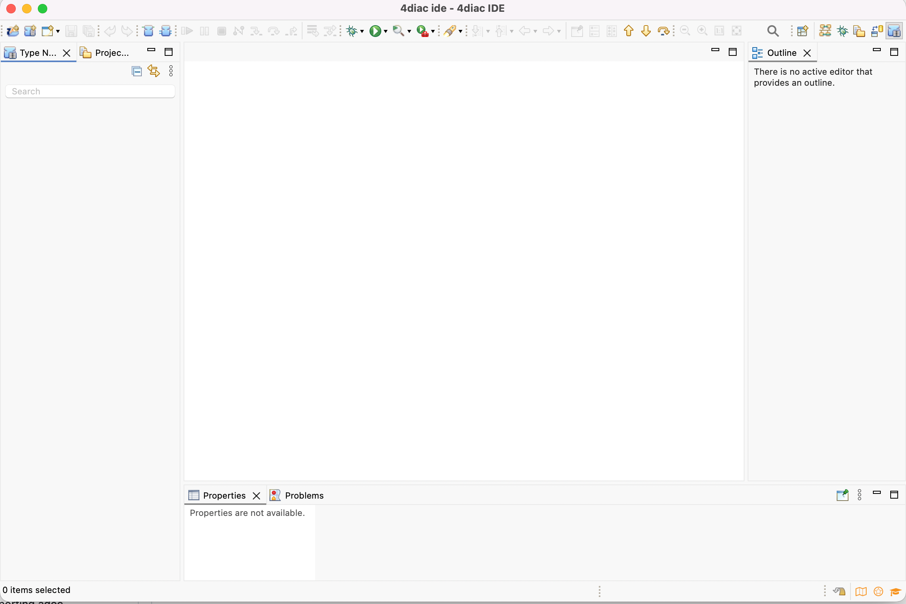
4diac IDE Preferences
Before starting the engineering process of IEC 61499 Applications, you can configure 4diac IDE to your liking.
On macOS, open the preferences via (shortcut: ⌘,):
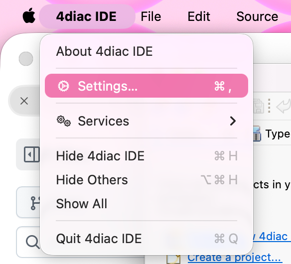
On Windows and Linux, open the preferences via .
The Preferences dialog groups settings by category. You will find 4diac IDE–specific options under the section. Later in Step 1 - Use 4diac IDE locally, you’ll learn more about the preferences.
Appearance
Under you can configure theming (Light / Dark), color and font themes, and tab behaviour:
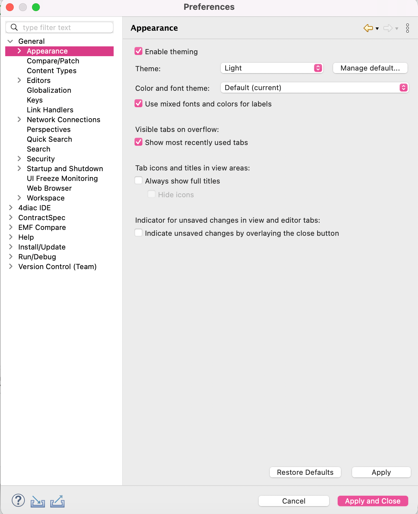
Colors and Fonts
Under you can customise the colors used by 4diac IDE for connectors, events, data types, and other IDE elements. This is useful for adapting the editor to your display preferences or for improving contrast:
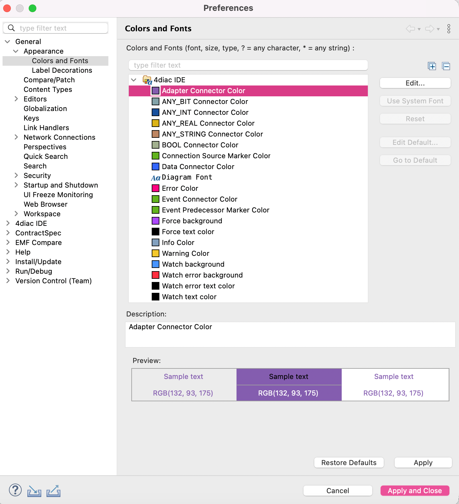
The Runtime Launcher needs to know where the run-time executable files are located. The default location can be set in the preferences. Currently two run-time environments are supported:
-
4diac Forte: path/forte.exe
-
Holobloc’s FBRT: path/fbrt.jar
Where to go from here?
-
Now that you got an overview of the major parts of 4diac IDE, you can start using it:
Step 1 - Use 4diac IDE Locally -
If you want to go back to the Start Here page, we leave you here a fast access:
Where to Start